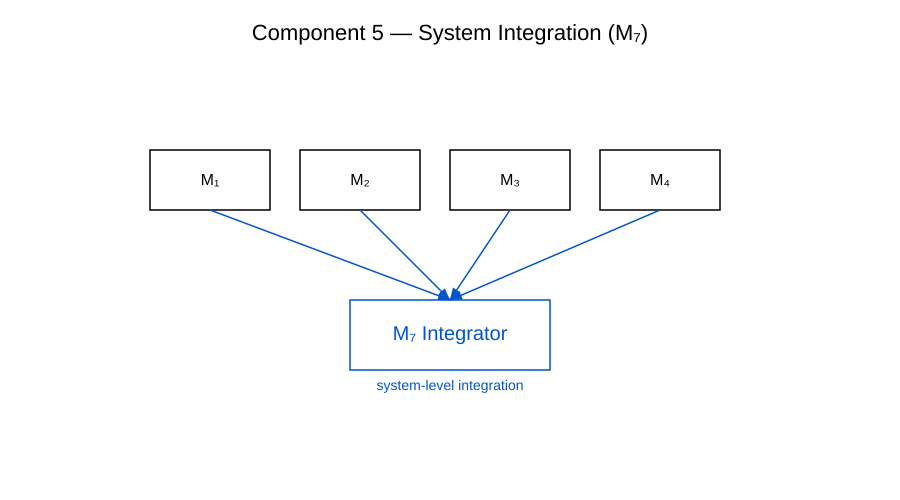

Komponente 5 — Strukturtransformation
Die Strukturtransformation ist die fünfte zentrale Komponente des RRK‑Frameworks. Sie beschreibt den Mechanismus, durch den konvergente Meta‑Strukturen (Komponente 4) in neue funktionale Formen überführt werden.
Definition
Eine Strukturtransformation ist ein Prozess, der stabile Meta‑Strukturen in neue Konfigurationen überführt, ohne die grundlegende rekursive Logik zu verlieren. Sie bildet die Grundlage für die Entwicklung komplexer architektonischer Muster innerhalb des RRK‑Frameworks.
Beispielhafte Darstellung

Rolle im RRK‑Framework
- Weiterentwicklung stabiler Meta‑Strukturen
- Ausbildung komplexer architektonischer Muster
- Beitrag zur vollständigen RRK‑7‑Architektur (Figure 6)
Sie bildet den Übergang von stabilen Meta‑Strukturen zu dynamischen, funktional erweiterten Systemen.